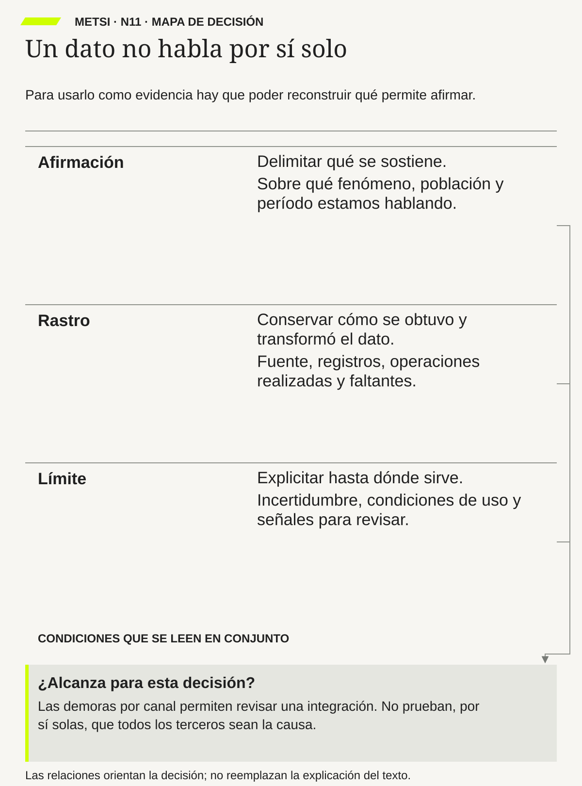

<!doctype html><html lang="es-AR"><meta charset="utf-8"><title>METSI N11 · Mapa de decisión</title><style>@page{size:A4;margin:0}*{box-sizing:border-box}html,body{margin:0;background:#fff}.plate{position:absolute;left:18.5mm;top:18mm;width:173mm;height:233.55mm}.plate img{display:block;width:100%;height:100%}footer{position:absolute;top:280mm;left:18.5mm;right:18.5mm;border-top:.2mm solid #b5b7b0;padding-top:3mm;font:8pt Arial;color:#575a55;display:flex;justify-content:space-between}</style><main class="plate"></main><footer><span>MAPA DE DECISIÓN</span><span>Diego Carralbal, 2026 · linkedin.com/in/carralbal</span></footer></html>